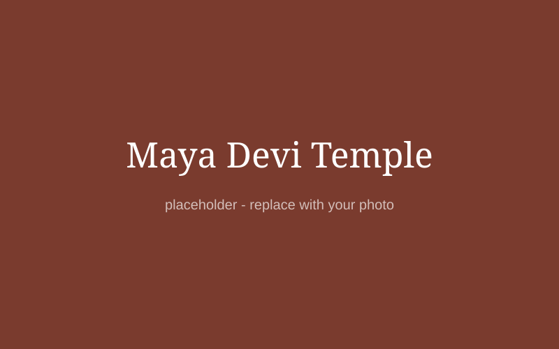
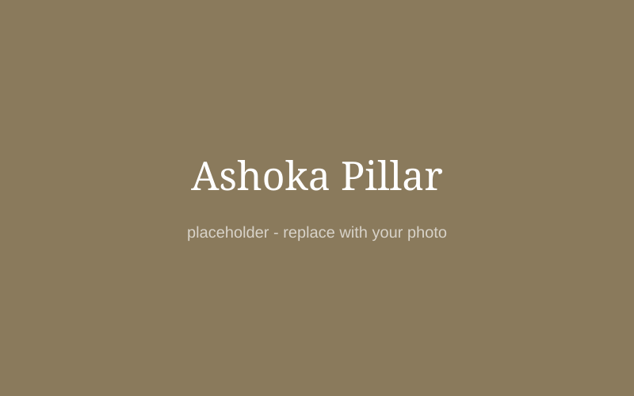
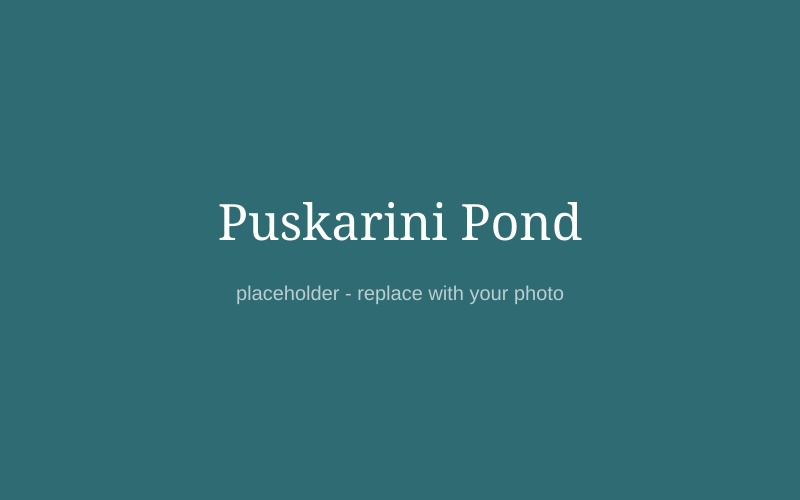
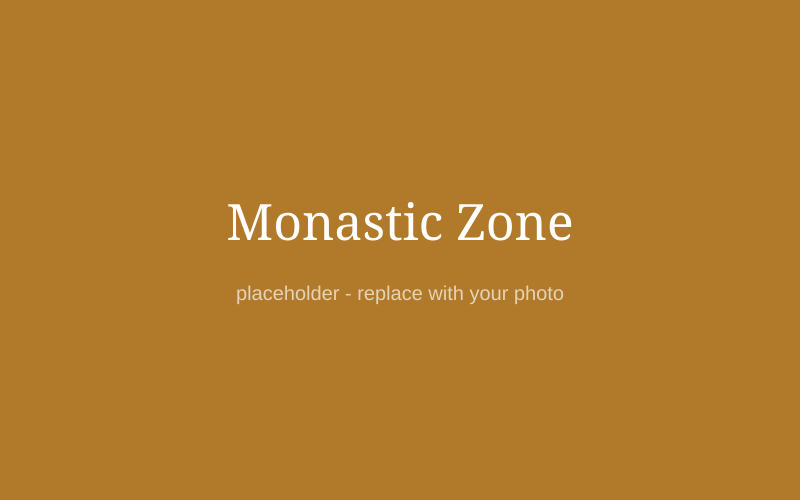
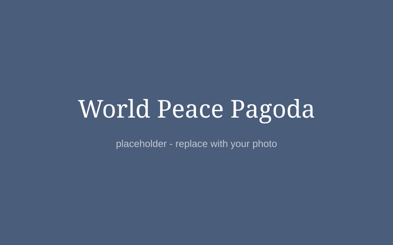
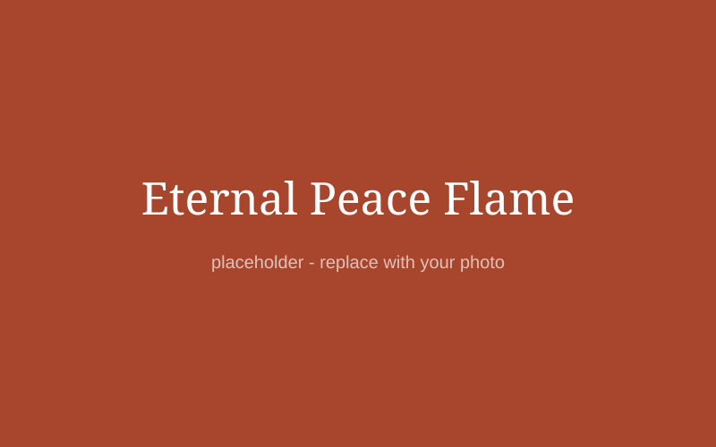
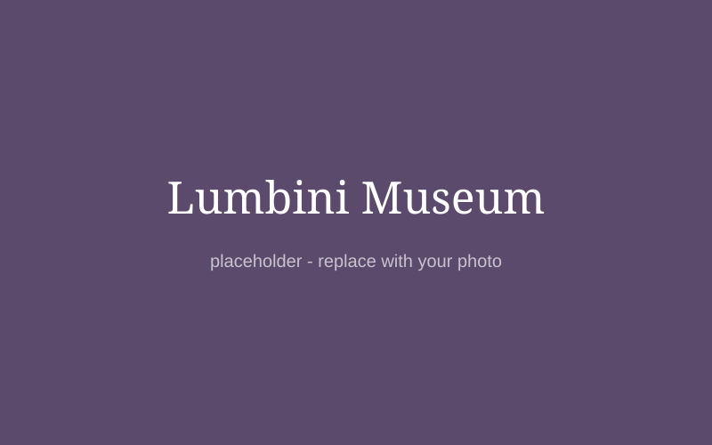

The most important area of Lumbini, where the birth of the Buddha is remembered.

A white temple built over the ancient ruins. Inside is the marker stone that pilgrims believe shows the exact birth spot.

Raised in 249 BCE. The inscription is one of the oldest written records that names Lumbini as the Buddha's birthplace.

A sacred pond where, according to tradition, Maya Devi bathed before the birth and the baby Buddha had his first bath.
North of the Sacred Garden, many countries have built monasteries and temples in their own national style. The east side holds Theravada monasteries and the west side holds Mahayana and Vajrayana ones.

A white temple with Thai-style decoration.
A gold-coloured temple with a tall pagoda.
A Tibetan-style stupa shaped like a lotus.

Built by Japanese Buddhists. A quiet place for a walk.

A flame that burns at the entrance of the canal area as a symbol of peace.

Shows ancient art, coins, manuscripts and objects connected to Buddhism.